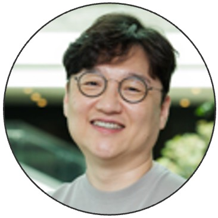
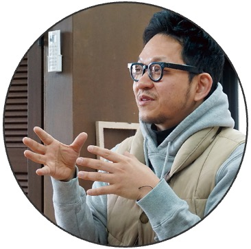

전문가 밀착 멘토링
사회혁신 현장의 전문가들이 팀별 사회혁신가로 참여해 학생들에게 밀착 멘토링을 제공하며 문제 해결의 깊이를 더했습니다.
👤
정택수 대표
넷스파

👤김한수 실장
경기연구원
👤
류혜원 대표
마인드풀커넥트
👤
채아람 대표
스튜디오 우당탕탕

👤윤주선 교수
마을만들기 전문가
👤
유명상 이사
협동조합 청풍
👤
유승규 대표
안무서운회사
카카오 현직자 멘토링
카카오 현직 기획자, 디자이너, 개발자가 멘토로 참여해 서비스 기획과 기술 구현 전반에 대한 실무 조언을 아낌없이 제공했습니다.
👤
공태민
카카오모빌리티
Frontend 개발
Frontend 개발
👤
송태현
카카오
Server 개발
Server 개발
👤
신태욱
카카오
Mobile 개발
Mobile 개발
👤
안용준
카카오
AI·ML 개발
AI·ML 개발
👤
안종억
카카오
기획 · UI·UX
기획 · UI·UX
👤
이채록
카카오
Data 개발
Data 개발
👤
임유주
카카오
UI·UX 디자인
UI·UX 디자인
자문 및 협력 전문가
학계 및 산업계의 다양한 전문가들이 자문 및 평가에 참여하여 프로젝트의 완성도를 높였습니다.
👤

전은화 교수
단국대학교
자유교양대학
자유교양대학
👤

나미현 교수
글로벌K-컬처융합학부
👤

이정훈 교수
단국대학교
자유교양대학
자유교양대학
👤

황윤자 교수
단국대학교
공학교육혁신센터
공학교육혁신센터
👤

김혜영 교수
단국대학교
교육혁신원
교육혁신원
👤

배은경 대표
리모
👤

이준환 대표
테일러체인
👤

이지수 대표
리얼데이
👤

이정우 선임
투비소프트